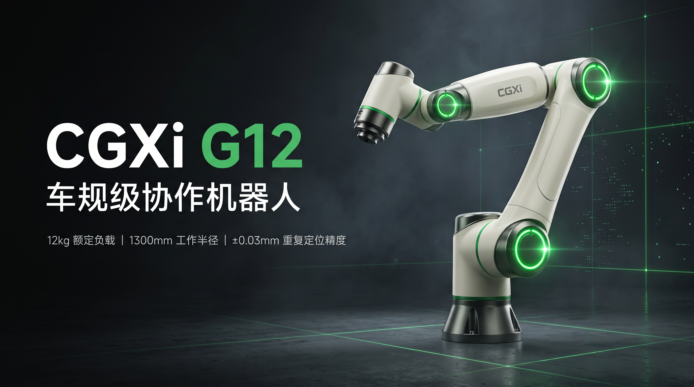
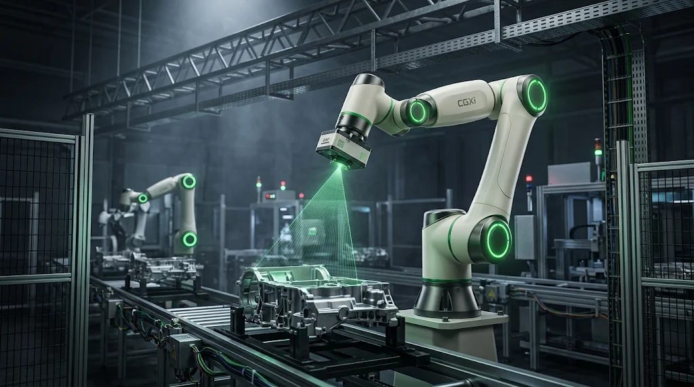
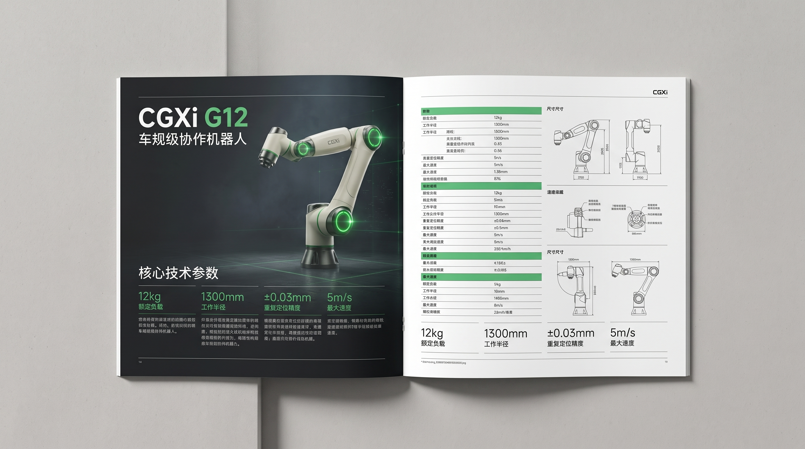
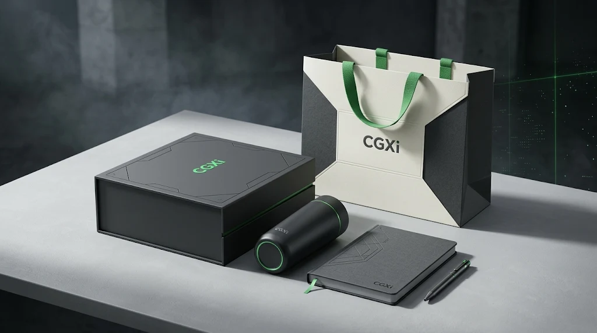
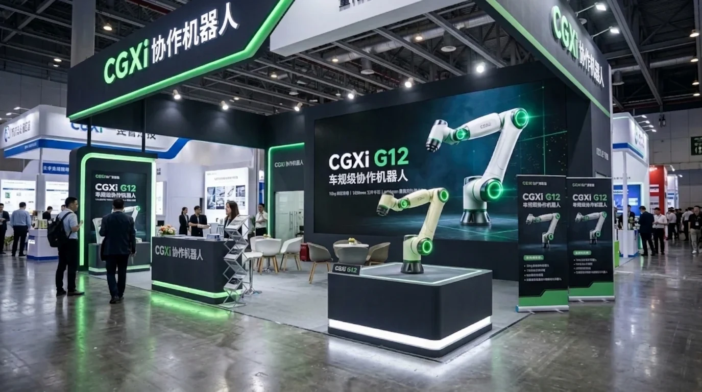
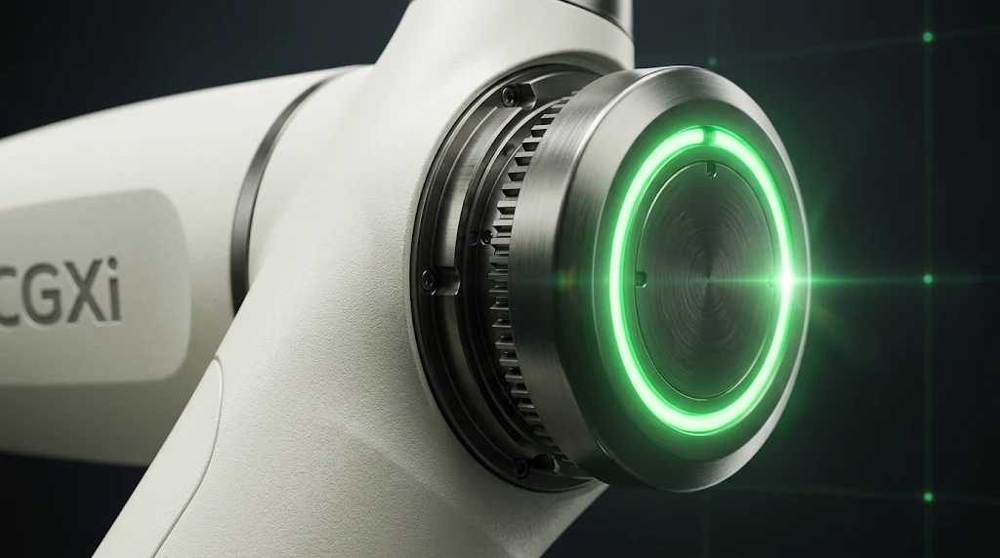

CGXi G12 协作机器人
从机械臂外观、关节语言到技术手册与展台的工业设计概念探索。
- 额定负载
- 12 kg
- 工作半径
- 1,300 mm
- 重复定位精度
- ±0.03 mm
- 末端速度
- 5.0 m/s
以上为概念设计指标，未经工程验证。
视觉画廊


产线视觉检测
末端视觉模块扫描输送线上的金属工件。


技术手册
将整机主视觉、概念参数与线稿排进同一套版式。


品牌物料
在包装、手提袋和文具中延续产品的配色。


展台概念
以机械臂、背板与展台灯带组织展会展示。

关节细节
以同心端盖和机械分件线勾勒旋转轴。绿色环形灯把视线集中在关节位置，拉丝金属与细纹臂壳形成质感对比。
色彩、材质与表面处理
CMF 概念配色取自渲染图，供视觉方向参考。
象牙白
细纹哑光臂壳
深钛灰
拉丝质感关节端盖
信号绿
关节光环与品牌点缀